Vamos a crear una aplicación que va a leer un listado de películas de un fichero JSON y las vamos a mostrar por pantalla. Posteriormente, mostraremos el detalle de cada película y un buscador.
Accedemos al Activity_main.XML y configuramos la vista, quedará de esta manera.
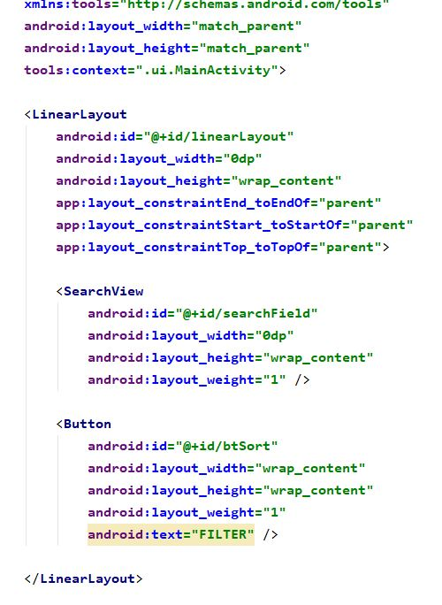Creamos un paquete “Utils” en el que vamos a crear una clase “AspectRatioImage”; ésta la vamos a utilizar para usar el “ImageViuw” para ajustarla al ratio que nosotros le pongamos.
Vamos al código XML “Item_Movie”, donde configuraremos la vista de la película. Quedará de esta manera
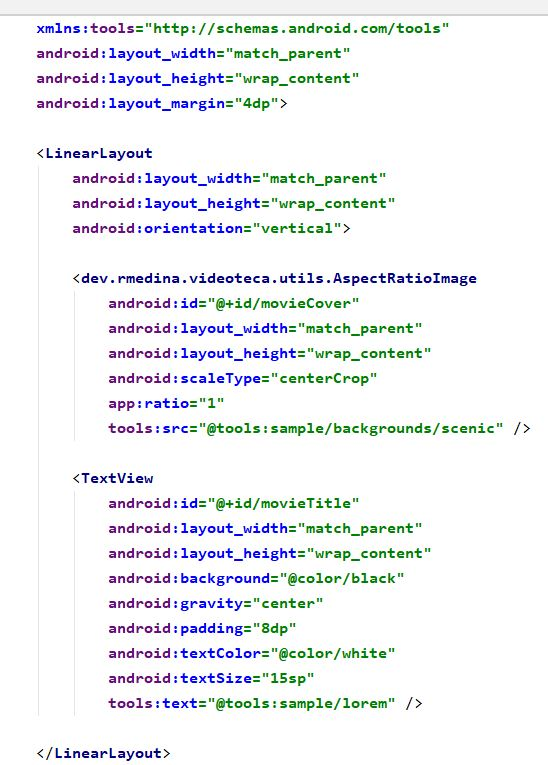Vamos al “MainActivity”, pero antes, vamos a meter el fichero JSON en la carpeta “Assets”. Creamos un modelo llamado “Movie” que va a ser nuestro objeto.
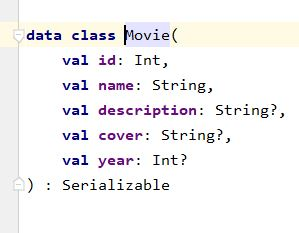Creamos en la carpeta “Utils” una clase llamada “Extensión” donde vamos a tener un método que va a leer el fichero JSON.
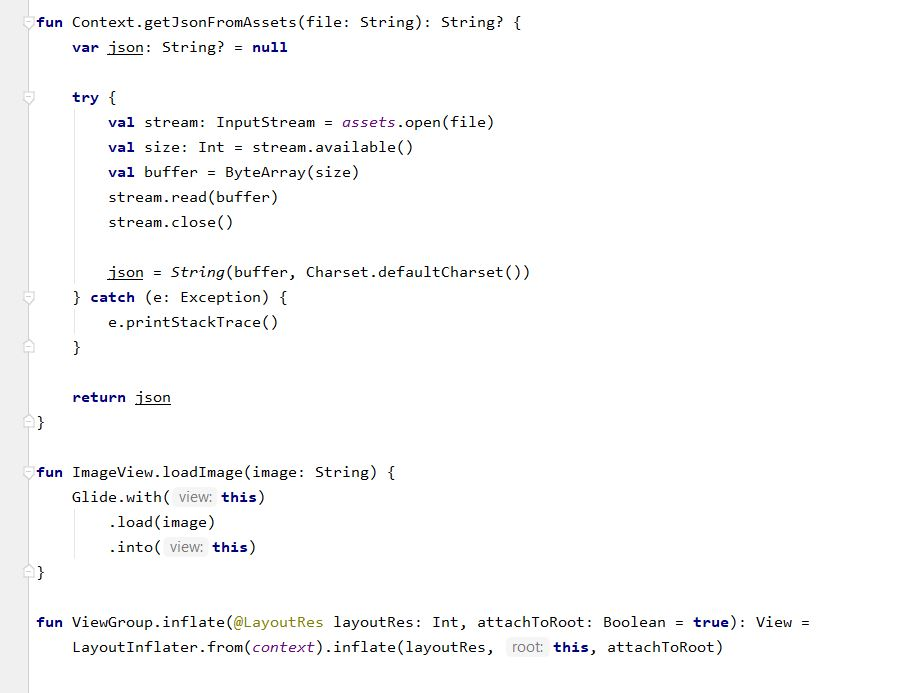En “MainActivity” creamos un método, “GetListFromJason”, que nos va a devolver directamente el listado. En este método vamos a crear el listado, quedaría así.
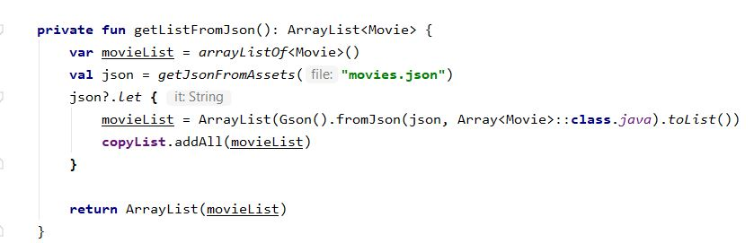Pasamos a mostrar por pantalla el listado de las películas.
Lo primero que vamos a crear en el paquete Adapter, es una clase “MoviesViewHolder”, donde crearemos un método en el que vamos a pasar lo que obtenemos del fichero JSON a la vista, el método quedaría así.
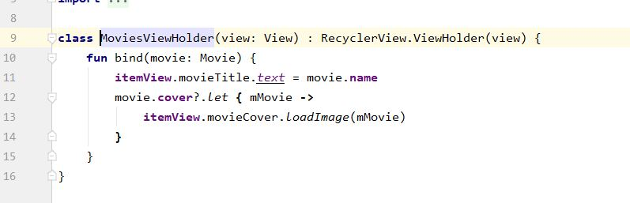Creamos una nueva clase que va a ser el adaptador, a esta clase le vamos a pasar el “ViuwHolder” creado antes y en ella vamos a empezar a crear nuestros métodos. El primer método se llamará “OnCreate” que será el primero en ejecutarse, posteriormente, creamos el segundo método se llamará “GetItemCount”; y el ultimo método lo llamaremos “OnBindViewHolder”, todo quedaría así.
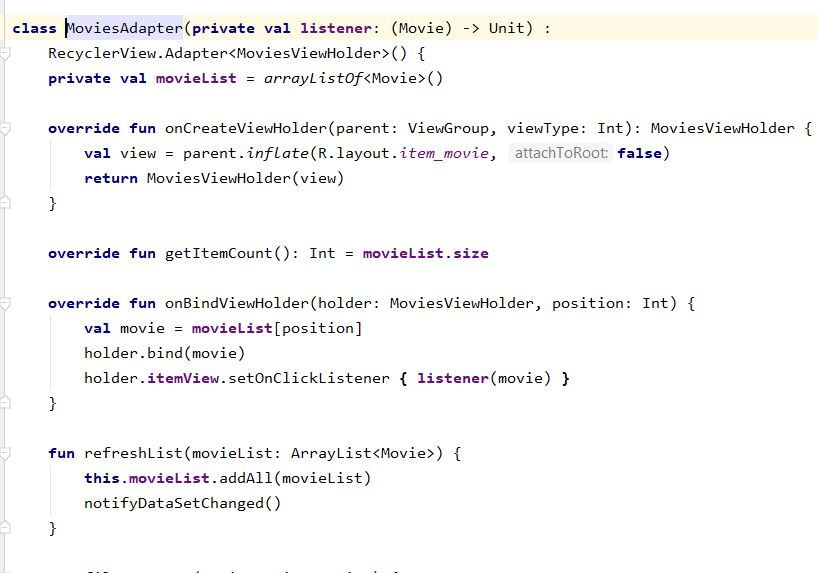Nos vamos al “MainActivity” y modificamos el método “OnCreate”; antes creamos un método llamado “RefreshList” que recibirá un listado de películas. Este método será muy útil en el caso que queramos refrescar o cargar varios listados. Antes de compilar la aplicación tenemos que dar permiso a internet, para ello, accedemos al “AndoidManifest” y añadimos esta línea.
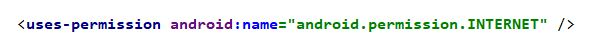Ahora vamos a pasar al siguiente nivel, mostraremos el detalle de cada película, para ello vamos a ir al adaptador para realizar una pequeña modificación, modificamos los métodos “OnBindViuwHolder” y también creamos un nuevo método que se llamara “OnMovieClick” que recibirá la película y mostrara el detalle. El método quedaría así.
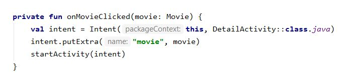Nos vamos al “DitailActivity” donde recibiremos ese detalle, para ello creamos el método “RetrieveMuvi”. En este método creamos la pantalla y en el siguiente que vamos a crear, imprimiremos lo creado antes, el método nuevo se llamará “RenderUi” y quedaría así .
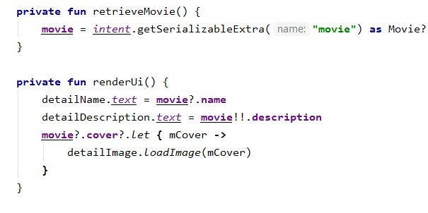Con esto ya podemos ver el detalle de cada película. Ahora vamos a implementar un buscador para buscar por título. Implementamos estos dos métodos dentro del “MainActivity”; el método de lo que se va a encargar es de cuando el usuario escriba y pulse en la lupa se va a ejecutar el método OnQUERYText y luego Submit; y cuando el usuario escriba, se va a ejecutar el OnQueryTextChange. Ahora vamos a crear el método que va a filtrar por el título, este método “FilterByName” se encargara de añadir un filtrado y buscar la película correcta. Quedaría así.
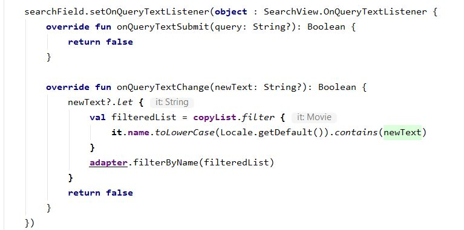Enlace al Repositorio appKotlinMovie